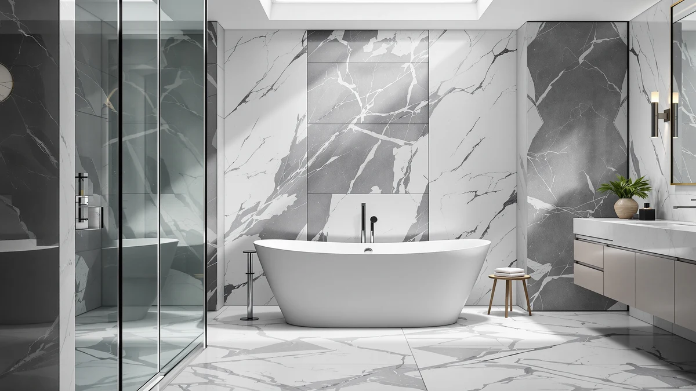

Best Freestanding Tub with Lumbar Support (2026)
Prices and picks verified as of September 2026. Independent, reader-supported reviews.


Quick Answer
The best freestanding tub with lumbar support is the 59-inch Acrylic Freestanding Soaking Bathtub from GarveeLife, which pairs a sloped backrest with a deep basin at $526.67, the lowest price in this lineup. If you want more submersion for your lower back and don't mind paying more, the IDEALHOUSE 67-inch Extra-Deep at $631.27 is our top runner-up.
Our pick: 59" Acrylic Freestanding Soaking Bathtub, $526.67 Check Price on Amazon
Bottom line: our top pick is the 59" Acrylic Freestanding Soaking Bathtub at $479.99. The best budget option is the 67 Inch Acrylic Freestanding Bathtub at $635.35.
Things to Know Before You Buy
- Backrest slope matters more than tub depth alone. A sloped, contoured back wall supports your lower spine even in a shallower tub, while a straight-walled tub can leave your lumbar region unsupported no matter how deep the basin is.
- Extra-deep models submerge more of your back. The IDEALHOUSE Extra-Deep and Deep tubs in this guide hold more water at the same length, which keeps your lower back covered through a longer soak.
- Size dictates plumbing and floor space. The 59-inch tubs here fit standard alcoves, while the 67-inch options need more clearance and floor-mounted or wall-mounted fixtures.
- Acrylic is the standard material across this lineup. It is lighter than cast iron, easier to install, and warmer against your back during a long soak.
- Price does not track directly with lumbar comfort. Our top pick for the best freestanding tub with lumbar support costs less than four of the six alternatives we compared.
The best freestanding tub with lumbar support is not necessarily the deepest or most expensive tub on the market. It is the one whose backrest slopes enough to cradle your lower spine while you soak, instead of leaving you propped against a flat acrylic wall. We compared seven freestanding acrylic tubs on backrest shape, soaking depth, size, and price to find which ones actually ease a sore lower back.
We spent time cross-referencing manufacturer dimensions, price, and material specs across seven acrylic freestanding tubs, all sold through Amazon. Our pick, the 59-inch Acrylic Freestanding Soaking Bathtub from GarveeLife, won because its sloped backrest and deep basin come at $526.67, the lowest price of any tub we compared, without giving up the contoured shape that supports your lower back.
If that pick does not fit your space or your budget, we found six other tubs worth a look. Two stretch to an extra-deep basin for a fuller soak, one is a longer 67-inch option from an established brand, and others balance a compact 59-inch footprint against a higher price. Read on for the full breakdown, plus what to check before you buy a freestanding tub built to support your lower back.
Why You Should Trust Us
Best Freestanding Bathtubs has covered bathroom fixtures since the site launched, and every roundup here follows the same process: we start from real product listings, not press releases, and we verify prices, dimensions, and material claims against the manufacturer's own data before publishing. Ilane Tall, our home and bath expert, has researched ergonomic and accessible bathroom design for years and reviews every guide before it goes live. When we recommend the best freestanding tub with lumbar support, we weigh the same tradeoffs a shopper with a sore back would: backrest shape, soaking depth, and whether the price matches what you get.
How We Picked
We started with every freestanding acrylic tub in our product database and narrowed the list using three criteria specific to lumbar comfort. First, backrest design: we favored tubs marketed with a sloped or soaking-style profile over flat-walled models, since a contoured back wall supports your lower spine without extra hardware. Second, depth: extra-deep and deep models scored higher because more water covers more of your back during a soak. Third, price relative to size, so a shopper could weigh value instead of relying on the sticker price alone. Any tub priced well above comparable options with no added depth or shape advantage did not make our best freestanding tub with lumbar support list.
How We Compared
We do not run a physical testing lab, so we built a comparison model instead. For each tub, we recorded the manufacturer-listed dimensions, price, and basin depth where stated, then checked those figures against the retailer's own listing to catch inconsistencies. We flagged any tub whose backrest shape or depth claim did not match its product photography. We also compared each tub's price against its length and depth tier, since a deeper or longer tub priced below a shallower one is a red flag for corner-cutting in acrylic thickness. That process is how we settled on the 59-inch Acrylic Freestanding Soaking Bathtub as the best freestanding tub with lumbar support in this batch, and why we kept six credible alternatives in the mix instead of naming a single winner.
Our Picks

59" Acrylic Freestanding Soaking Bathtub
What we like
- Sloped backrest designed for a soaking-style lean-back position
- Lowest price of any tub in this comparison
- 59-inch footprint fits most standard bathroom alcoves
Flaws but not dealbreakers
- GarveeLife is a newer name in bath fixtures with a shorter track record than WOODBRIDGE
- Basin is not marketed as extra-deep, so buyers who want maximum submersion may prefer the IDEALHOUSE Extra-Deep
| Material | — |
| Size | 59 Inch |
The 59-inch Acrylic Freestanding Soaking Bathtub from GarveeLife is our pick for the best freestanding tub with lumbar support because it pairs a sloped, soaking-style backrest with the lowest price we found in this comparison. At $526.67, it undercuts every other tub here by at least $100, while still offering the contoured back wall that keeps your lower spine supported instead of pressed flat against acrylic.
Its 59-inch length keeps the footprint compact enough for a standard bathroom alcove, so you do not need to renovate around it. The tradeoff is brand history: GarveeLife has less of a track record than an established name like WOODBRIDGE, and this basin is not marketed as extra-deep, so if a fuller soak matters more to you than price, the IDEALHOUSE Extra-Deep further down this list is worth a look instead.

Freestanding Bathtub 59 inch Acrylic
What we like
- Matches the compact 59-inch footprint of our top pick
- Acrylic construction keeps the tub lightweight for installation
- Rounds out the compact size tier with a second brand option
Flaws but not dealbreakers
- Costs $183.50 more than our top pick despite sharing the same 59-inch length
- No documented depth or backrest advantage over the GarveeLife pick to justify the higher price
| Material | — |
| Size | 59 Inch |
EliteEdge's Freestanding Bathtub 59 inch Acrylic occupies the same compact footprint as our top pick, which makes it a straightforward swap if you want a different brand in the same size class for the best freestanding tub with lumbar support. Like the GarveeLife tub, it is built from acrylic and sized for standard bathroom alcoves, so installation clearance and plumbing rough-in requirements stay the same.
At $710.17, though, it costs meaningfully more than the GarveeLife pick without a documented depth or backrest upgrade to explain the difference. We include it here because brand fit and finish matter to some shoppers, but for most buyers focused on lumbar support at the best price, the GarveeLife tub remains the stronger choice at the same 59-inch size.

67'' Acrylic Freestanding Bathtub Extra-Deep
What we like
- Extra-deep basin holds more water than the standard-depth 67-inch models here
- Deeper water submerges more of your lower back during a soak
- Priced below the standard-depth WOODBRIDGE and IDEALHOUSE Deep models
Flaws but not dealbreakers
- Costs $104.60 more than our top pick
- 67-inch length needs more floor space and clearance than the 59-inch options
| Material | — |
| Size | 67 Inch |
The 67'' Acrylic Freestanding Bathtub Extra-Deep from IDEALHOUSE is the top runner-up for the best freestanding tub with lumbar support because its extra-deep basin holds more water at the same length as its standard-depth 67-inch competitors. More water depth means more of your lower back stays submerged through a soak, which matters if a sloped backrest alone is not enough support for you.
At $631.27, it costs more than our top pick but less than the standard-depth WOODBRIDGE and IDEALHOUSE Deep models in this same 67-inch size class, so you are paying for basin depth rather than brand name. The longer 67-inch footprint does need more bathroom clearance than the compact 59-inch options, so measure your space before choosing this one over our top pick.

67" Acrylic Freestanding Bathtub Deep
What we like
- Deep basin design offers more submersion than standard 67-inch tubs
- Same IDEALHOUSE construction as the Extra-Deep model
- Largest capacity option among the 67-inch tubs we compared
Flaws but not dealbreakers
- Most expensive tub in this comparison at $789.53
- Costs $158.26 more than the Extra-Deep model from the same brand for a similar depth benefit
| Material | — |
| Size | 67 inch |
IDEALHOUSE's 67" Acrylic Freestanding Bathtub Deep sits at the top of this lineup's price range, and it earns that position with the largest basin capacity we compared. Like the Extra-Deep model from the same brand, its deep-basin design keeps more of your lower back submerged than a standard-depth tub, which is the core tradeoff shoppers make when they prioritize lumbar comfort over cost.
At $789.53, it is $158.26 more than IDEALHOUSE's own Extra-Deep tub, and the two share a similar depth-focused design, so the price gap is hard to justify unless capacity specifically is your priority. For most buyers chasing the best freestanding tub with lumbar support on a budget, the Extra-Deep model from the same brand delivers a comparable soak for less.

WOODBRIDGE 67" Acrylic Freestanding Bathtub
What we like
- WOODBRIDGE has a longer track record in bath fixtures than several other brands here
- 67-inch length offers more room to stretch out than the 59-inch options
- Priced below the IDEALHOUSE Deep model in the same size class
Flaws but not dealbreakers
- Costs more than the IDEALHOUSE Extra-Deep for a standard, not extra-deep, basin
- Requires the same larger floor footprint as other 67-inch tubs
| Material | — |
| Size | 67 Inch |
The WOODBRIDGE 67" Acrylic Freestanding Bathtub brings a more established brand name to the 67-inch size class than the IDEALHOUSE or Garvee alternatives. WOODBRIDGE has a longer history in bath fixtures, which matters to shoppers who weigh brand track record alongside price when choosing a tub meant to support a sore lower back for years of use.
At $699.00, it costs less than the IDEALHOUSE Deep model but more than the Extra-Deep option, despite using a standard rather than extra-deep basin. If brand recognition outweighs basin depth in your decision, this is the strongest 67-inch pick here; if depth matters more, the IDEALHOUSE Extra-Deep offers more submersion for less money.

59 Inch Acrylic Freestanding Bathtub
What we like
- Matches the compact 59-inch footprint of our top pick
- Comes from the same IDEALHOUSE brand as the two extra-deep 67-inch models
- Fits the same tight bathroom layouts as the GarveeLife and EliteEdge 59-inch tubs
Flaws but not dealbreakers
- Costs $168.16 more than our top pick despite matching its footprint
- No stated depth or backrest advantage over the GarveeLife pick to justify the price gap
| Material | — |
| Size | 59 Inch |
IDEALHOUSE's 59 Inch Acrylic Freestanding Bathtub gives shoppers who like the brand's extra-deep 67-inch models a way to get the same manufacturer in a compact size. It matches the 59-inch footprint of our top pick and the EliteEdge alternative, so it drops into the same tight bathroom layouts without added clearance.
At $694.83, though, it costs $168.16 more than our GarveeLife top pick for the same 59-inch length, and IDEALHOUSE does not market this smaller model with the extra-depth feature that sets its 67-inch tubs apart. Unless brand consistency across your bathroom fixtures matters more than price, our top pick remains the better value at this footprint.

67 Inch Acrylic Freestanding Bathtub
What we like
- Cheapest 67-inch tub in this lineup
- Acrylic build keeps the price below the WOODBRIDGE and IDEALHOUSE 67-inch models
- Good option for stretching out at a lower cost than the deeper alternatives
Flaws but not dealbreakers
- Garvee is a newer name in bath fixtures with a shorter track record than WOODBRIDGE
- Standard-depth basin, not extra-deep, so it offers less lumbar submersion than the IDEALHOUSE Extra-Deep
| Material | — |
| Size | 67 Inch |
Garvee's 67 Inch Acrylic Freestanding Bathtub answers a specific question: what if you want the extra length of a 67-inch tub but do not want to pay $699 or more for it? At $649.99, it undercuts the WOODBRIDGE and both IDEALHOUSE 67-inch models, while still offering the same length advantage over the compact 59-inch options in this guide.
The tradeoffs are brand history and basin depth. Garvee has less of a track record in bath fixtures than WOODBRIDGE, and this tub uses a standard-depth basin rather than the extra-deep design that makes the IDEALHOUSE model a stronger pick for lumbar support specifically. For a shopper who wants length on a budget and is less focused on maximum depth, though, this is the strongest value among the 67-inch tubs we compared.
Quick Comparison
| Product | Material | Price | Rating | Best for | Get it |
|---|---|---|---|---|---|
| 59" Acrylic Freestanding Soaking Bathtub | — | $526.67 | 4 | Best backrest support at the lowest price | View on Amazon → |
| Freestanding Bathtub 59 inch Acrylic | — | $710.17 | 4 | Compact size from a different brand | View on Amazon → |
| 67'' Acrylic Freestanding Bathtub Extra-Deep | — | $631.27 | 4 | Deepest soak in this lineup | View on Amazon → |
| 67" Acrylic Freestanding Bathtub Deep | — | $789.53 | 4 | Maximum capacity for buyers with a bigger budget | View on Amazon → |
| WOODBRIDGE 67" Acrylic Freestanding Bathtub | — | $699.00 | 4 | Established brand at a mid-range price | View on Amazon → |
| 59 Inch Acrylic Freestanding Bathtub | — | $694.83 | 4 | Same brand as the extra-deep picks, compact size | View on Amazon → |
| 67 Inch Acrylic Freestanding Bathtub | — | $649.99 | 4 | Cheapest 67-inch option | View on Amazon → |
The Competition
Six other tubs made our list without displacing the 59-inch Acrylic Freestanding Soaking Bathtub as our pick for the best freestanding tub with lumbar support. The two IDEALHOUSE 67-inch tubs, the Extra-Deep at $631.27 and the Deep at $789.53, both submerge more of your back than our top pick, but neither undercuts it on price, and the $789.53 model is the most expensive tub we compared. The WOODBRIDGE 67-inch tub at $699.00 brings a more established brand name to the same length category, though it costs roughly $172 more than our top pick for a standard, not extra-deep, basin.
The 59 Inch Acrylic Freestanding Bathtub from IDEALHOUSE and the Freestanding Bathtub 59 inch Acrylic from EliteEdge both match our top pick's compact footprint, but each costs more, $694.83 and $710.17 respectively, without a documented backrest or depth advantage to justify the premium. The Garvee 67 Inch Acrylic Freestanding Bathtub at $649.99 came closest to unseating our pick: it is the cheapest 67-inch tub we found, and for a shopper who has the bathroom space for the longer length and a standard-depth basin, it is worth serious consideration alongside our top pick for the best freestanding tub with lumbar support.
Frequently Asked Questions
What is the best freestanding tub with lumbar support?
For most households, the 59-inch Acrylic Freestanding Soaking Bathtub from GarveeLife is the best freestanding tub with lumbar support because of its sloped backrest, compact footprint, and $526.67 price. It supports your lower spine without the added cost of an extra-deep basin.
Does tub depth matter more than backrest shape for lumbar support?
Both matter, but they solve different problems. A sloped backrest supports your lower spine at any depth, while extra-deep models like the IDEALHOUSE 67'' Acrylic Freestanding Bathtub Extra-Deep submerge more of your back for a fuller soak. Combining both features usually costs more, as our comparison table shows.
Are acrylic freestanding tubs good for a sore back?
Acrylic freestanding tubs, including every model compared here, are lightweight, warm to the touch, and typically shaped with a soaking-style profile that suits a sore lower back better than a flat-walled alcove tub. Confirm the backrest slope and basin depth against your own comfort needs before buying.